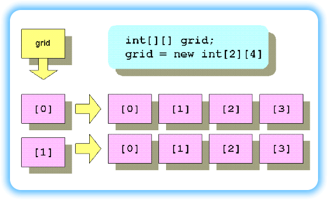
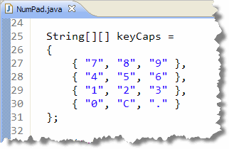
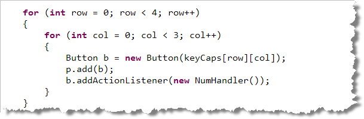

How about some more
arrays! Now that you know how to create arrays containing
objects, let's learn how to create
and process multi-dimensional arrays, like
those you'd use in the game of TicTacToe, or those
that represent the pixels in a photographic image.
How about some more
arrays! Now that you know how to create arrays containing
objects, let's learn how to create
and process multi-dimensional arrays, like
those you'd use in the game of TicTacToe, or those
that represent the pixels in a photographic image.
When you declare an array,
the elements can be of any type. You can create an array of
GImage references like this:
GImage[] pictures = new GImage[5];
and, you can create an array of int variables like this:
int[] pieces = new int[10];
The variables pictures and pieces are
both array variables that refer to a collection of
GImage references or to a collection of
int values.
 Java also allows you to create array variables that refer, not
to
Java also allows you to create array variables that refer, not
to Button objects or int values, but
to other arrays. These are called multidimensional
arrays. Since we'll only be working with two dimensions in
this class, I'll refer to these as 2D arrays, although
you can have as many dimensions as you like.
The easiest way to think of a 2D array is to think of rows and columns. A grid or a spreadsheet is a useful mental model. In reality, though, a 2D array is composed of arrays of arrays. You'll see what that really looks like shortly.
To create a 2D array, just extend the syntax you've already learned for 1D arrays. For instance, in the example shown here:
int[] d1 = new int[5];
the variable d1 is an int[]
(int array) that refers to 5 int
values.
Since that's true, perhaps you can figure out what the code shown here means:
int[][] grid;
The variable grid is an array variable,
just the like the variable d1 in the earlier
example. But, each of the elements contained in the
grid array is not an int, but an
int[]— that is, an int array variable.
Allocating Memory
Of course, just like with 1D arrays, an array variable doesn't
actually "point to" anything, until you allocate some memory
by using new and an array constructor. The
syntax for doing this with a 2D array is very similar to that
used for a single-dimension array:
int[][] grid = new int[2][4];
This piece of code creates a variable (grid), that
refers to a two-element array. Each element in that two-element
array (grid[0] and grid[1]) is
an int[], that is, an int array
variable, as shown here:

In this case, bothgrid[0] and grid[1]
refer to separate four-element int arrays.
The illustration should help you to visualize
the relationships between the various pieces.
Using 2-D Elements
Rather than thinking of 2-D arrays as shown in the previous
illustration, (even though that is how the arrays are
actually implemented in memory), it is usually
easier to think of them as an actual grid composed of rows and
columns, labeled starting at 0, like this:
 Thinking of 2-D arrays in this way makes it easy to
remember where the individual elements are located.
Thinking of 2-D arrays in this way makes it easy to
remember where the individual elements are located.
To access an individual element, instead of providing one subscript enclosed in brackets, you supply two subscripts, each enclosed in its own set of brackets. (You cannot put both subscripts in the same set of brackets, as you can do in Pascal).
- The first subscript represents the row in the array.
- The second subscript represents the column of the element you want.
Remember that both subscripts are zero based.
C/C++ Note : In Java, subscripts do
not "wrap around" as they do in some other languages such
as C. You cannot access scores[1][0] by using the
notation scores[0][3]. That's because, in reality,
you are accessing an individual array variable, as shown in the
earlier illustration.
Initializing 2D Arrays
You can initialize 2D arrays by using loops and storing values
in each element, just as you can with a one-dimensional array.
Of course, when accessing 2D arrays, you'll usually use a
pair of nested for loops with indexes for
the row and column.
Just as with 1D arrays, you can create and initialize a 2D array in one statement by providing a list of initial values in an initializer list. When you do this, you supply a separate initializer list for each of the sub-arrays. Each of these sub-array initializers is enclosed in its own set of braces, and separated from the others by commas.

Here's an example that creates a 4 x 3 array of String
that imitates the layout of a standard numeric keypad. You'll find this
example in NumPad.java, which is in this chapter's
code folder.
When you use automatic initialization like this, you must
remember to match the number of brackets and initializers.
If you have only a single bracket after String[]
your program won't compile.
Processing 2D Arrays
As I previously mentioned, you'll normally process a 2D array by
using a pair of nested for loops with
indices for the rows and columns. This is pretty straightforward.
Here's some code that processes the array keyCaps,
from NumPad.java, to create a set of
AWT Button objects:

Of course, if you want to avoid hard-coding the sizes of the rows and columns, Java allows you to make a perfectly generic traversal loop by using each sub-array'slength
field like this (assuming an array named a):
for (int r = 0; r < a.length; r++)
for (int c = 0; c < a[r].length; c++)
// Process a[r][c] here
Notice that each row in a 2D array can be treated as a
1D array in its own right. Thus, for the inner loop in this
example, (when processing the columns), we could test against
a[r].length, because each sub-array has its own
length field.
The NumPad applet is available in this chapter's code folder.
Or, you can just take my word for it, and
look at the nice picture shown here:

Using the Enhanced for Loop
If you want to process every element in a 2D array (named twoD
in my example below), you can use the enhanced
for loop like this:
for (int[] oneD : twoD) // for each 1D array in 2D
{
for (int n : oneD) // for each int n in oneD
System.out.printf("%5d", n);
System.out.println(); // new line after each row
}
2D Arrays and Methods
The way that Java 2D arrays are implemented in Java makes it very easy to write methods which take 2D arrays as arguments (or parameters). You just have to remember to declare the parameter variable using two brackets instead of one.
Here's the header for a method that takes a 2D array of
double and returns the sum of all the numbers.
public double sum2D(double[][] ar) { }
Since each 2D array is actually a 1D array containing other 1D
array elements, you can pass those elements, which
represent the individual rows of the array, to a method that
processes 1D arrays, like sum1D() shown here:
public double sum1D(double[] ar) { }
Parameter Passing Examples
If you had a two-dimensional array of doubles named
nums, you could pass one
row of the array to the sum1D() method like this.
double sum = sum1D(nums[0]); // Pass 1st row of nums to method
If you want to pass the entire array, you wouldn't use a subscript.
Here's how you'd pass nums to the sum2D() array:
double sum = sum2D(nums); // Pass all rows of nums to method
To pass a single int value from the array to a method
that takes an int parameter, you'd use a pair
of subscripts, like this:
someMethod(nums[0][1]); // Pass single element to method
Of course, since each one of these methods takes a different kind of parameter, we could actually use the same name for all of them. This, you recall, is known as method overloading.
Returning 2D Arrays
Just as with 1D arrays, you can return 2D arrays from your methods. If, for instance, you're certain that every row in your 2D array has the same number of elements, you could return a 2D array containing the sum of each row and column like this:
//The sum2DAR() Method
double[][] sum2DAR(double[][] ar)
{
double[][] ans;
ans[0] = new double[ar.length]; // rows
ans[1] = new double[ar[0].length];
for (int r=0; r < ar.length; r++)
{
for (int c=0; c < ar[r].length; c++)
{
ans[0][r] += ar[r][c]; // Add each row total;
ans[1][c] += ar[r][c]; // Sum of each column
}
}
return ans;
// ans[0] contains sum of each row
// ans[1] contains sum of each col
}
Ragged Arrays
The array returned from sum2DAR() is called a
ragged array, because the two 1D arrays
ans[0] and ans[1] normally will
have different lengths. If you pass a 2D array that has
20 columns and only 5 rows, then the returned array will
have 5 elements in the the first array ans[0]
and 20 elements in the second array ans[1].
To create a ragged array, you have to allocate space for
each row of the 2D array independently, as is done inside
sum2DAR() with this code:
double[][] ans;
ans[0] = new double[ar.length];
ans[1] = new double[ar[0].length];

2D Arrays Summary
- A two-dimensional (2D) array is simply an array where every element is also an array. However, it is usually easier to think of it as a matrix or grid, with rows and columns.
- You define a 2D array variable by supplying a pair of
brackets following the variable name:
int[][] grid; - You instantiate a 2D array by supplying values for both
the rows, followed by the columns, each in its own
brackets:
int[][] grid = new int[3][4]; - The number of rows in a 2D array is represented by
the
lengthfield, just like a single-dimension array. It's possible for each row to have a different number of columns; to find the number of columns in a particular row (r), usegrid[r].length. - Access individual elements by supplying the row, then
the column, each in its own bracket:
int first = grid[r][c]; - Use nested loops to process all of the elements in a 2D array.
- You can pass a 2D array variable to a method by
creating a formal parameter with two brackets:
double average(double[][] entries). - If you want to pass a single row of a 2D array to a method, the method must have a 1D formal parameter, and you use only one subscript when passing the actual argument.
- Ragged arrays are 2D arrays where each row can have a different number of columns. Rectangular arrays have the same number of columns for every row.